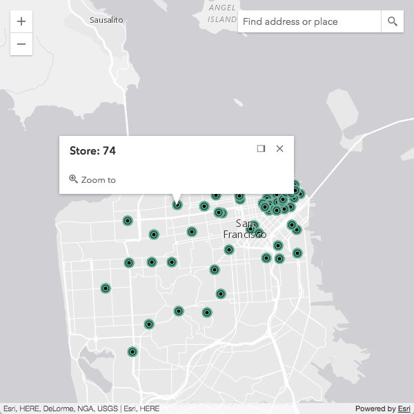
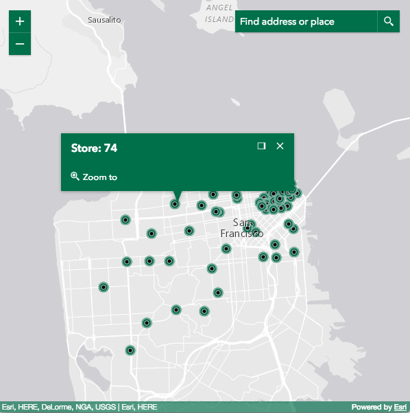

Styling
Default stylesheets
The following section describes the default stylesheet options available for the ArcGIS API for JavaScript.
main.css
Includes styles for everything in the API. This will be the simplest, albeit bigger-sized, option.
<link rel="stylesheet" href="https://js.arcgis.com/4.0/esri/css/main.css">view.css
If your application just needs the CSS for a basic map with the default widgets, view.css is a better alternative.
<link rel="stylesheet" href="https://js.arcgis.com/4.0/esri/css/view.css">Custom CSS
You can also take full control of the compiled CSS by using Sass. Sass is a CSS preprocessor that brings many useful features including variables, mixins, functions, among other capabilities. With Sass, you are able to choose what gets compiled into your main application's CSS file.
Widget CSS
CSS classes used by widgets now follows the BEM naming convention. This approach helps us with semantics, allowing classes to be easily identified and styled.
For example, in the snippet below, it's easier to see what each class name affects:
.esri-basemap-toggle { /* root of the widget */ }
.esri-basemap-toggle__image { /* image element owned by the widget */ }
.esri-basemap-toggle__image--secondary { /* alternate version of the image element */ }
Another benefit to this approach is that it leads to lower specificity in styles, so it should be easier to override CSS selectors. Theming a widget is more straightforward to do.
For example, the following snippet shows the CSS required for a simple dark theme:
.dark-theme .esri-widget,
.dark-theme .esri-widget-button,
.dark-theme .esri-menu,
.dark-theme .esri-popup-main,
.dark-theme .esri-popup .esri-pointer-direction,
.dark-theme .esri-button {
background-color: #242424;
color: #bdbdbd;
}
.dark-theme .esri-widget-button:focus,
.dark-theme .esri-widget-button:hover,
.dark-theme .esri-menu li:focus,
.dark-theme .esri-menu li:hover {
background-color: #333;
color: #d1d1d1;
}
.dark-theme .esri-button:focus,
.dark-theme .esri-button:hover {
color: #d1d1d1;
}
Sassy widgets
The previous approach works fine if you have a small set of widgets to theme. But if you need a scalable approach with more fine-grained control, you may want to work with the widget Sass files.
Our widgets' Sass files leverage the power of variables and allow you to quickly and easily start customizing the styles. For example, the following snippet highlights the variables that produce the default color scheme.
// Main Colors Vars
$text_color : $Calcite_Gray_700;
$background_color : $Calcite_Gray_050;
$anchor_color : $Calcite_Gray_550;
$anchor_hover_color : $Calcite_Gray_700;
$button_text_color : $Calcite_Gray_550;
$button_text_hover_color : $Calcite_Gray_700;

If you need to customize the colors, changing those variables is all that's needed to easily brand your application.
// Main Colors Vars
$text_color : #fff;
$background_color : #00704a;
$anchor_color : #00704a;
$anchor_hover_color : #000;
$button_text_color : #fff;
$button_text_hover_color : #000;

Additional information
Please refer to these additional links for further information: